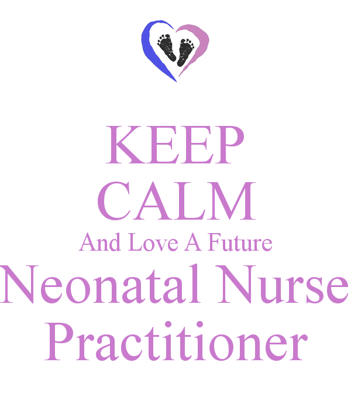

If babies is a loving motive to you, then you wil love the job of becoming the nurse I will love to be. I believe if you try it out as your career choice you will never turn back. It takes the strong ones to give it a try to save another one's life.#EVERYLIFEMATTERS
"Neonatal nurse practitioners (NNP) are advanced practice nurses that care for premature and sick newborns in neonatal intensive care units (NICU), emergency rooms, delivery rooms, or specialty clinics. Since NNPs care for neonates in need of constant attention, they often serve as primary caregivers to premature or ill newborns. A neonate under the care of an NNP may need specific, focused care due to premature birth, low birth weight, respiratory distress, heart abnormalities, congenital abnormalities, and other disorders."(How to Become a Neonatal Nurse Practitioner.)
A neonatal nurse must be a registered nurse (RN) with a four-year Bachelor of Science in Nursing Degree (BSN).You must be certified in Neonatal Resuscitation and/or Neonatal Intensive Care Nursing. You may also be required to complete a minimum number of years of clinical experience in a hospital setting.To become a neonatal nurse practitioner (NNP), you will also need a Master of Science in Nursing (MSN) degree. Many neonatal nursing schools offer this degree through a two-year Advanced Practice Neonatal Nursing (APNN) program. This type of program will prepare you for nursing licensure as a nurse practitioner (NP) and/or clinical nurse specialist (CNS).

*Pay Rate for a Neonatal Nurse
*Information on the National Association of Neonatal Nurses
The website nann.org explains that NANN is a community of registered nursing professionals at all stages of their careers who care for newborn infants born with a variety of health challenges, including prematurity, birth defects, infection, cardiac malformations, and surgical problems. For more than 30 years, NANN has supported its members and advanced the profession by providing opportunities for members to influence care for neonates and their families,collaborate with leaders and peers in their field, and gain knowledge to improve their daily practice.